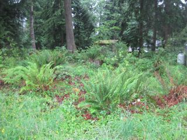
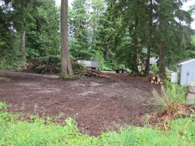

Grading & Land Clearing
{kind=link}
{kind=link}
{kind=link}
Grading Services
I offer a variety of grading services. From smoothing out your property and defining a basic grade to using the latest in laser leveling technology to create a perfectly flat base for a concrete pad. Below is a list of grades I can build for you.
- Basic drainage and contours for your landscape
- Access roads on your property
- Level pads on which to pour concrete
- remove debris and smooth out old building sites

Before: This area of landscape is uneven and overgrown
Land Clearing Service
Before grading a portion of landscape, the area will of course need to be cleared of obstructions.
The before and after photos at right show an example of a plot of land that I cleared for a customer.
I can cut down trees if needed, and move large rocks using a tractor. Trees, rocks, and other natural obstructions can often be relocated somewhere else on your land, or I can haul them away when the job's done.

After: The landscape has been cleared and levelled, and is ready for planting or building.